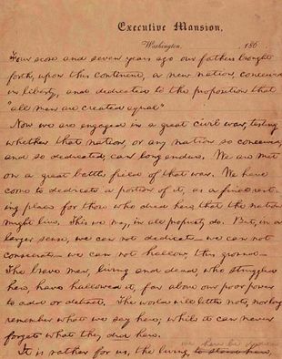

|
Lincoln Wrote the Gettysburg Address out at least five
times:
1. Washington Copy: 239 Words
2. Wills Copy: 269 Words
3. New York Sanitary Fair: 273 Words
4. Bancroft Copy: 272 Words
5. Baltimore Sanitary Fair: 272 Words
Even after his arrival at Gettysburg, President Lincoln
continued to put finishing touches to his address. The
first page of the original text was written in ink on a
sheet of Executive Mansion paper. The second page, either
written or revised at the Wills residence in Gettysburg, was
in pencil on a sheet of foolscap, and. according to
Lincoln's secretary Nicolay, the few words changed in pencil
at the bottom of the first page were added while in
Gettysburg. The second draft of the address was written in
Gettysburg, probably on the morning of its delivery, as it
contains certain phrases that are not in the first draft but
are in the reports of the address as delivered and in
subsequent copies made by Lincoln. It is probable as stated
in the explanatory note accompanying the original copies of
the first and second drafts in the Library of Congress, that
it was the second draft which Lincoln held in his hand when
he delivered the address.
Quite opposite to Lincoln's feelings, expressed soon
after the delivery of the address, that it "would not Scour"
the President lived long enough to think better of it
himself and to see it widely accepted as a masterpiece.
Early in 1864, Mr. Everett requested him to join in
|

Page 1 of the Wills copy of the Gettysburg Address (also known as the
Nicolay copy), now in the possession of the Library of Congress
|
presenting manuscripts of the two addresses given at
Gettysburg to be bound in a volume and sold for the benefit
of stricken soldiers, at a Sanitary Commission Fair-at New
York. The draft Lincoln sent became the third autograph
copy known as the Everett-Keyes copy, and it is now in the
possession of the Illinois State Historical Library.
George Bancroft requested a copy in April 1864, to be
included in "Autograph Leaves of Our Country's Authors".
This volume was to be sold at a Soldiers' and Sailors'
Sanitary Fair in Baltimore. As this fourth copy was written
on both aides of the paper, it proved unusable for this
purpose, and Mr. Bancroft was allowed to keep it. This
autograph draft is known as the Bancroft copy, as it
remained in that family for many years. It has been
recently presented to the Cornell University Library.
Finding that the copy written for "Autograph Leaves" could
not be used, Mr. Lincoln wrote another, a fifth draft, which
was accepted for the purpose requested. It is the only
draft to which President Lincoln affixed his signature. In
all probability it was the last copy written by Lincoln, and
because of the apparent care in its preparation it has
become the standard version of the address. The fifth draft,
which long remained in the hands of the family of Colonel
Alexander Bliss, publisher of "Autograph Leaves" as known as
the Bliss copy. It was purchased in 1949 for $54,000 by
Oscar B. Cintas, of Havana, Cuba, a former Cuban ambassador
to United States, who willed it to the United States of
America with the stipulation that it be placed in the
Lincoln Room, White House, Washington, D.C.
The whereabouts of the 5 Copies of Lincoln's Gettysburg
Address:
2 Copies, Library of Congress, Washington, D.C.
1 Copy, Illinois State Historical Library
1 Copy, Lincoln Room, White House
1 Copy, Cornell University
Kinds of words in Lincoln's Gettysburg Address:
One letter words: 5
Two letter words: 46
Three letter words: 54
Four letter words: 56
Five letter words: 30
Six letter words: 25
Seven letter words: 13
Eight or more letter words: 43
Total: 272
Kinds of syllables in Lincoln's Gettysburg Address:
One syllable word: 204
Two syllable words: 50
Three or more syllable words: 18
Total: 272
Origin of words in Lincoln's Gettysburg Address:
Latin: 46
Anglo-Saxon: 226
Total: 272
"That" appears 13 times in Lincoln's Gettysburg Address "I"
is not used at all.
Source: Megan Quinn for the History 139A website
|